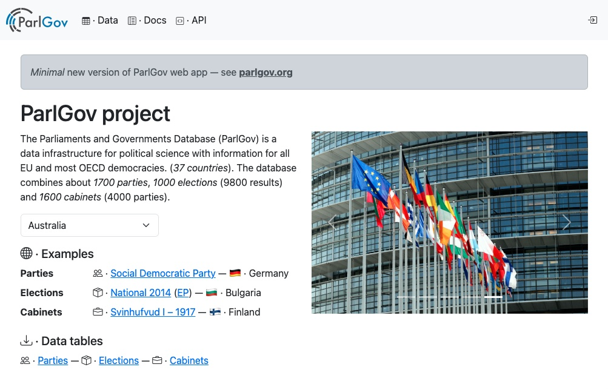

Usage · ⚙️
Python and Django versions are specified in pyproject.toml and documented in
CHANGELOG.md.
Run · 🚀
Use codespace, locally, or with Docker.
Start server in codespace and open website in the PORTS tab.
# (.venv) ./
just serve
Start locally with Django at localhost:8000
# (.venv) ./app
python manage.py runserver
Use with Docker at localhost:8000
docker compose up
Create an admin user (see Django docs) to edit data with
# (.venv) ./app
python manage.py createsuperuser
See the example of a production deployment in Dockerfile-flyio.
Installation · 🛠️
Run in codespace, install locally, or use Docker (see above).
Codespace is fully configured. Load the data and run a local server with just commands.
# (.venv) ./
just load-data
just serve
Local install and project initialization examples are provided in
init-dev-project.sh.
bash ./scripts/init-dev-project.sh
source .venv/bin/activate
cd app
python manage.py runserver
Docker version requires a local database.
docker compose up --build
See the section Data import below or use init the script in a Docker container terminal.
» # /app
» bash ./scripts/init-dev-project.sh
Data import · 🏗️
Import data from ParlGov stable release, create database views, and create an admin user to access the Django admin site for data editing.
# (.venv) ./app
python manage.py loaddata parlgov-fixture.json
cat apps/views_data/views-data.sql | python manage.py dbshell
python manage.py createsuperuser
Data validation · 🕵🏼♀️
All data is validated during the addition to the database with Django. The
validate_data command can run these and additional validations (see below).
# (.venv) ./app
python manage.py validate_data
Additional validations include
- parties
- inclusion criteria check — see priority in
run_include_checks(party)
- inclusion criteria check — see priority in
- elections
- one election result for election
- seats sum equals seats_total
- vote share sum in defined interval
- no seat party (first loser) included
- max. one party with vote share < 1.0% and 0 seats
- cabinets
- PM for one party specified
- previous election included
Additional scripts data checks
cabinet_update_election— check and update election variable in all cabinetselection_no_seats_party— show elections with missing coding of first loser (largest party no seats)
Codebook · 📙
All codebook sections are recorded in the database as Markdown entries. They can be edited using the ParlGov website.
A Markdown version of the codebook based on the sections from the database is available on the ParlGov website and can be dumped with a Django management command.
# (.venv) ./app
python manage.py create_codebook
A shell script creates the codebook, formats the Markdown text file, renders a PDF, and adds the two documents to the documentation.
# (.venv) ./
bash scripts/create-codebook.sh
API · 🔗
The website provides an API with Django REST framework.
It is a read-only API; no login is required.
Documentation with an OpenAPI 3 schema is provided in schema.yaml.
